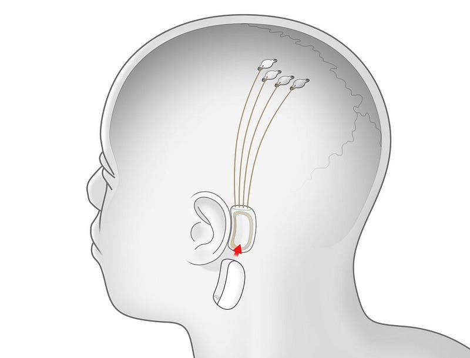

Some of my all-time favorite movies, TV shows, and games share this theme of the cyberpunk / dystopian future where people in society are one with technology.
Some of my favorite gaming experiences were playing the Deus Ex series and marveling at how I could upgrade my character with bio modifications to make him stronger, faster, tougher, smarter whilst being able to hack into enemies, ATMs, turn invisible, or even use black market biomodifications to get an even greater edge over those computerised beings I would fool and destroy whilst feeling like the king of the world strutting about the games digital worlds of Seattle, Medina, and Prague.
You can imagine then how hyped I am about the forthcoming Cyberpunk 2077 game in November.
Take the movies and TV shows, movies like Bladerunner, The Matrix, Altered Carbon, and Total Recall, both the original and the remake. They all had those great moments of a future with technology and artificial intelligence built into almost everything. Those johnny cabs, the recall the memory company, holograms, mobile phones built into people's hands, transparent displays, autonomous robots, flying cars, neon-drenched cityscapes, and broken worlds.
I always loved this style of media and when I heard about Elon Musks' idea to implant a computer chip into people's brains to interact with AI I was somewhat intrigued, especially given that this technology is like something you would find in those cyberpunk movies and games but this time it's for real.
Neuralink & AI Symbiosis

Elon Musk today is investing heavily in future technology from Tesla, the Boring company, Space X all the way to Neuralink. No one can deny the ambition to achieve revolutionary and exciting technology which will have a benefit not only to us as Humans but to our planet as well.
Why then am I excited for Neuralink?
Neuralink is developing brain-machine interfaces with the ultimate goal of achieving symbiosis with artificial Intelligence.
Elon once wrote:
If you can’t beat em join em. Neuralink mission statement.
This was referring to advanced AI becoming much more intelligent than humans and that in order for us to keep up we would essentially need to become one with AI. From this though, Musk believes:
uncontrolled, unregulated advanced general artificial intelligence poses an existential risk to humanity
This is then is probably one of the reasons why Neuralink has come into existence, to be a kind of safety net against advanced AI.
Here’s how it works.
The theory is that a chip with small electrodes in threads will be effectively attached to the brain which will then be able to connect to the internet and allow fast communication between humans and computers. The chip will allow:
ultra-high bandwidth brain-machine interfaces to connect humans and computers. Practically, this materializes as a chip that is implanted into the brain to achieve a “sort of symbiosis with artificial intelligence” that can significantly preserve and enhance our brains.
The early versions of this technology are said to be aimed at people who have suffered brain injuries or disorders in the hope that it can help repair motor skills and restore brain functionality in these people. Musks' ambitions for the future will, however, be more ambitious with a greater focus on those brain-computer interfaces.
Musk claims “humans are already partly cyborgs”, well not all of us exactly but in a sense, you could argue that we are. Humans have been using prosthetics, hearing aids, pacemakers, laser eye surgery, as well as other types of artificial joints for decades.
All of these things that used to strengthen parts of our body, keep us alive and help us out are already a form biohacking and modification and when you add our reliance on technology to this, it quickly starts to mount up that we are only really going in one direction and probably is only a matter of time before technology and AI inside of us is just the new norm.
This for me is the exciting future this technology could provide.
Imagine for a second that this technology is successful. These brain-computer interfaces can operate your phone, your computer, car, or even any other internet of things (IoT) device. You could browse the internet, research anything, look up all kinds of knowledge, even immediately speak a whole other language just like that.
This right here would be a Sci-Fi/Cyberpunk dream come true for me. The ability to essentially upgrade my mind and have access to all the knowledge and information I could possibly want.
More to come
I know that my dream of having this technology is a long way off and that there are potential pitfalls to this kind of technology especially something that is connected to your brain but I am optimistic that this technology can deliver on its promises in the future.
We will learn more, however, on the 28th August 2020 as Elon Musk has stated on Twitter that Neuralink will provide an update into its recent progress.
Just to wet the whistle in the meantime, Elon has been busy once again giving us a few tidbits. He stated in response to computer scientist Austin Howard:
Neuralink’s technology would allow people to “listen to music directly from our chips.”
As well as this Elon goes on to says that Neuralink:
“could help control hormone levels and use them to our advantage (enhanced abilities and reasoning, anxiety relief, etc.).”
If Elon’s dropping these nuggets about what he envisions Neuralink being able to achieve in the future, I for one will be all over this tech if it ever becomes available to consumers.
For now though, let's just look forward to the 28th August to hear more about the progress of Neuralink.
Keep an eye out for my future post on this event.
Newer: Wireless Charging. Potential disaster or nothing to be concerned about?
Older: 5 Ways Blockchain Will Be Important In The Future.
First published on Medium.